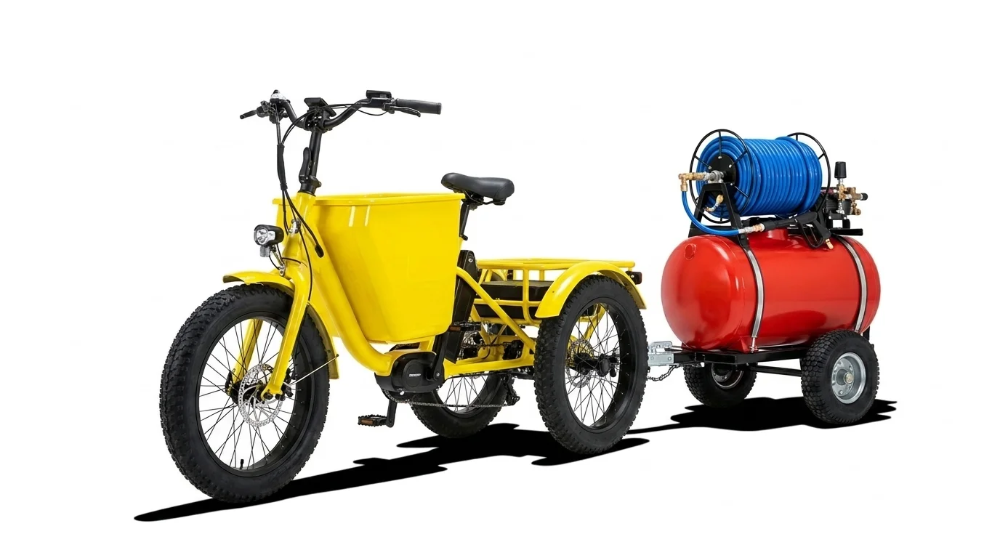

Street Drains Cleared in Forty-Five Minutes by Cargo Trike
Rapid kerbside gully jetting, grate resetting, and bollard repair across Cardiff without road closures or abandoned traffic cones.
When a single blocked street gully turns a pedestrian crossing into a shin-deep lake, waiting six weeks for a diesel suction lorry and three-way temporary traffic lights makes no sense at all. Cardiff Kerb-Gully & Bollard Works rolls straight up the cycle lane on electric cargo tricycles carrying 180-bar rotary jetters, silt vacuums, and cold-cure asphalt cassettes. We lift the iron, clear the trap, reset the frame, and pedal away before your kettle has even cooled.

Why Six-Tonne Lorries Shouldn't Fix One Drain
Standard municipal roadworks treat a single clogged grate like a major motorway resurfacing project. We think that is completely bonkers.
When a kerbside gully backs up outside your shopfront or terraced house, traditional highway protocol demands a twelve-tonne diesel vacuum tanker. That means booking a Section 50 road-opening license, reserving twenty metres of kerbside parking, erecting thirty orange plastic cones, and stringing three-way battery traffic lights across the high street. By the time the contractor turns the diesel engine over, six weeks have slipped by, two buses have clipped the temporary mirrors, and the puddle has grown into a small lake.
Our electric cargo trike skips the civic theatre entirely. At 1.2 metres wide, our bespoke heavy trikes slip along segregated cycleways, pedestrian zones, and narrow Victorian mews lanes without obstructing a single lane of traffic. We roll up, insert our magnetic iron lifters, flush the blockage, and pack away before anyone even considers calling the highways committee.
0 Lane Closures vs. 3-Way Temporary Traffic Lights
100% Free Traffic FlowTraditional suction tankers demand twenty metres of clearance and full carriageway closure permits under Chapter 8 street-works legislation. Our cargo trike operates entirely inside existing kerbside cycle bays and pedestrian footway margins with compact collapsible signage. Buses keep running, cyclists keep rolling, and shop deliveries carry on without interruption.
41-Minute Average Pit-Stop vs. 6-Week Council Backlog
Same-Day DispatchCouncil work orders spend forty days crawling between divisional highway depots, permit officers, and third-party utility contractors before a spade touches tarmac. We operate an agile fleet across four Cardiff wards. When a gully chokes on Cathedral Road or Mermaid Quay, our nearest trike rider drops in and clears the sump in forty-one minutes flat.
0 Litres of Diesel Idling vs. 85-Decibel Vacuum Tankers
Whisper-Quiet LiFePO4Diesel vacuum lorries burn eight litres of fuel per hour just idling their PTO pumps outside bedroom windows at seven in the morning. Our high-pressure rotary pumps run off clean 48-volt lithium-iron-phosphate battery packs operating at under 58 decibels—quieter than the barista's espresso grinder across the pavement.
How a 240-Litre Trike Cassette Outworks a Twelve-Tonne Suction Lorry
Most urban flooding starts in the top ninety centimetres of a street gully pot, where autumn plane leaves, crisp packets, and road grit weld themselves into a concrete-hard plug below the cast-iron grate. Conventional highway contractors dispatch twelve-tonne vacuum tankers that require lane-closure permits, diesel idling at eighty-five decibels, and two hours of cone layout just to reach the kerb. Our Gully-Siphon 240 trailer skips the theatre entirely, parking neatly inside a standard cycle bay while a whisper-quiet battery pump drives 180-bar brass rotary nozzles straight through compacted silt.
Once the trap is flushed clean and the standing water drops, our crew checks the BS EN 124 ductile-iron frame for rocking or sunken bedding mortar. Rather than leaving a temporary red plastic barrier to gather moss until next spring, we pack the seat with rapid-setting polymer resin and cold-applied bitumen that accepts full bus and lorry wheel loads within twenty minutes. Every gram of extracted road silt is sealed inside our onboard 240-litre hopper for licensed dewatering back at Sloper Road, leaving the pavement dry, level, and completely clear of plastic clutter.
180-BAR ROTARY FLUSH
High-speed closed-circuit footage demonstrating our high-pressure brass rotary nozzle blasting through compacted leaf mulch and road grit inside a transparent test trap at our Sloper Road test rig.
Three Things We Fix Before Lunch
Practical street-level drainage physics and cast-iron repairs executed before the midday tea break.
Cardiff's Victorian kerbstones and modern cycle lanes are littered with neglected street furniture: gullies choking with plane-tree root mulch, clattering iron grates that wake up half the street whenever a delivery van passes, and knocked-over cast-iron bollards abandoned in the hedge. Here is exactly what our trike riders repair in a standard morning run.
Gully Trap Jetting & Closed-Loop Silt Vacuuming
180-Bar Hydro-PressureWe lift the iron grate, drop our 240-litre closed-loop suction wand into the gully pot, and scour the siphon U-bend with 180-bar rotary brass jets. Compacted mud, decomposed autumn leaves, and road gravel are extracted directly into our onboard sealed cassette without spilling black slurry across the pavement. Once cleared, we flood the trap with clean recycled water to confirm immediate gravitational outflow into the main storm sewer.
Rocking D400 Ductile-Iron Grate Bedding & Mortar Re-seat
BS EN 124 CompliantWhen buses and heavy electric vehicles brake over sunken road gullies, crumbling cement mortar breaks loose, leaving iron frames clanging like anvil hammers with every passing wheel. We chisel out the shattered bedding, prime the brick corbel with structural polymer resin, and seat the D400 ductile-iron frame level with the wearing course. Our rapid-cure polymer mortar hardens to 50 N/mm² compressive strength in twenty minutes, accepting full double-decker bus loads before we pedal away.
Bent Cast-Iron & Tubular Steel Bollard Straightening
Modular Ground SocketsDelivery lorries reversing blindly into loading bays love knocking cast-iron bollards into forty-five degree angles. Instead of waiting for a council team to bring a pneumatic jackhammer, our trike carries hydraulic truing rams and modular steel socket sleeves. We true the upright, core-drill cracked concrete footings, and pack the collar with cold-cure expanding polymer aggregate that locks the post rock-solid without hot tarmac fumes.
Ward & Estate Testimonials
Real feedback from local Cardiff business owners, harbour facilities leads, and civic estate managers.
“Every autumn our shop doorway on Albany Road turned into a canal whenever the kerb drain backed up with sycamore leaves. Cardiff Kerb-Gully had a cargo trike outside within thirty minutes of my call; they lifted the iron, sucked out seventy kilos of grit, and our pavement stayed bone dry all winter.”
“We manage sixty residential parking bays and pedestrian boardwalks around Mermaid Quay. Trying to get council contractor lorries through our gated cycleways was an administrative nightmare, but the Sloper Road trike crew glides straight in without touching our bollards and clears six gullies before lunch.”